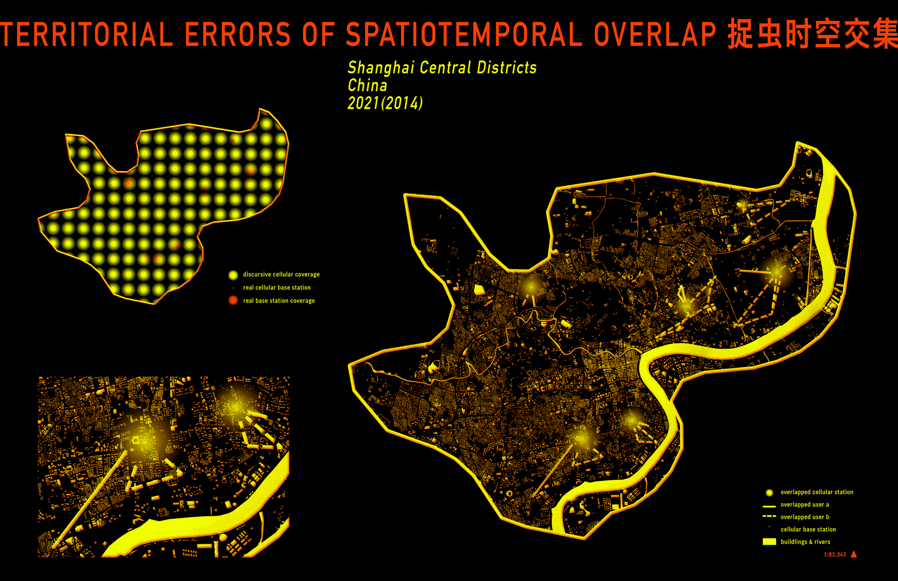

My map series, Territorial Errors of Spatiotemporal Overlap, traces the disconnect between official narratives and the realities of telecommunications infrastructure—between the techno-utopian vision of the Dynamic Zero-COVID regime and the territorial errors embedded in its crude algorithm. The maps focus on central districts of Shanghai, chosen for the availability of data on cellular station distribution and individual cellular trajectories. The scale is deliberately limited to maintain the legibility of both base station coverage and movement paths.